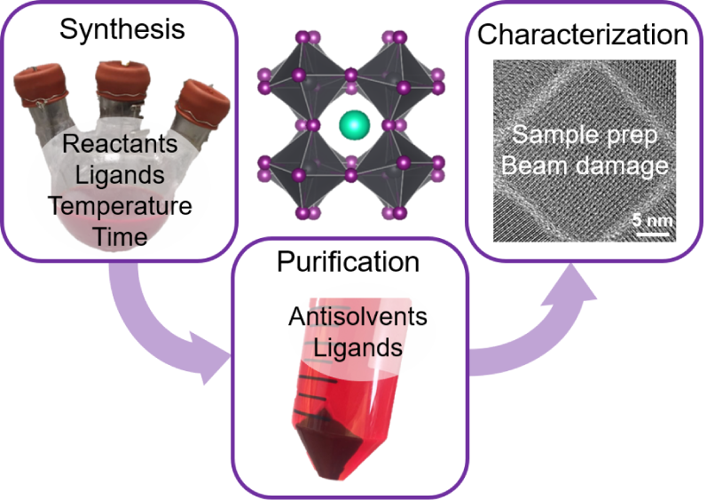

RECENT NEWS
07.01.2021 - Congrats to Ben Stacy for winning one of the department's Teaching Assistant of the Year awards! This is awarded to a TA who demonstrates an exceptional experience for the students and professor.
04.20.2021 - Congratulations to Dr. Yangning Zhang! Yangning just successfully defended her thesis, "Metal Halide Perovskite Nanocrystals: Synthesis, Stability, and Lead-Free Alternatives".
04.06.2021 - Congrats to Ben Stacy for placing in the top three in the "Quick Pitch" contest at the CDCM MRSEC Annual Meeting, for his pitch titled, Silicon Nanocrystal Assembly With Covalent Bonds!
01.25.2021 - Yangning Zhang's recent Perspectives paper (see news item below) was one of the most downloaded papers published in Chemistry of Materials in 2020! Check out the list here. Congrats Yangning!
01.01.2021 - A belated welcome to the newest members of the Korgel Group! Raul Barbosa and Adebola Adeagbo joined the group in the fall, good to have you on the team!
11.19.2020 - Congratulations to the newest graduate of the Korgel Group, Dr. Hyun Gyung Kim, who successfully defended her thesis today. Great work!
07.06.2020 - Congrats to Yangning Zhang on her Perspectives paper - A "Tips and Tricks" Practical Guide to the Synthesis of Metal Halide Perovskite Nanocrystals - published in Chemistry of Materials. Check out her work here!
RESEARCH HIGHLIGHT
A "Tips and Tricks" Practical Guide to the Synthesis of Metal Halide Perovskite Nanocrystals
Metal halide perovskite nanocrystals offer a range of interesting properties and are being studied extensively for applications in solar cells, photodetectors and light-emitting devices. In a recent perspectives paper, Yangning Zhang, Timothy Siegler, Cherrelle Thomas, Michael Abney, Tushti Shah, Anastacia De Gorostiza, and Randalynn Greene provide a number of best practices for the synthesis, purification and characterization of metal halide perovskite nanocrystals, with detailed discussion of CsPbI3, CsPbBr3, CH3NH3PbI3 (MAPI), and Cs2AgBiBr6 as examples. This Perspective helps explain and resolve some of the known troubles when working with metal halide perovskite nanocrystals, and hopefully will provide helpful guidance, especially for researchers relatively new to the field. It was one of the most downloaded papers published in Chemistry of Materials in 2020! Find the paper and watch the ACS LiveSlides presentation here.


{kind=link}